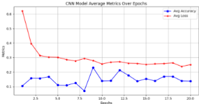

My Projects
Even or Odd Calculator
A Python program that determines if a number is even or odd using the modulo operator.
Mad Libs
An interactive Python game that creates funny stories based on user input.
Drink Specs Filter
A Python tool that filters drinks based on caffeine content, with data from Excel.

Dinner Table Assembly
CAD design and engineering of a dinner table using SolidWorks.
Table / Workbench
Woodworking project combining craftsmanship with engineering principles.
Northern Cardinal Bird House
Specially designed bird house for Northern Cardinals using CAD and SolidWorks.
Mobile Greenhouse
Portable greenhouse design combining woodworking, CAD, and team leadership.
English to Morse Code
A python program that converts enlglish text into morse code.
Big Projects
Showcase '24 - EMG Prosthetic Hand
This project was inspired by amputees. People should not be limited to the functionality of their limbs. As a result, we decided to make an EMG powered prosthetic hand. Utilizing a MyoWare sensor, we can use this to power the servos thus retracting or clenching the hand.
How are we able to improve current systems of modern technology using engineering to facilitate a change in healthcare?
We can create a robotic arm that follows your dominant hand for handling dangerous substances in labs as well for amputees.
Group Members
Showcase '25 - AI Traffic Optimization
How can AI optimize the traffic flow and safety at the entrances of Innovation Academy during peak hours?
The overall purpose of the research is to solve any issues related to traffic flow and safety at Innovation Academy's entrances during peak hours with the help of an AI model. The specifics of the research are to aim for a design that uses a machine learning algorithm to analyze pre-existing and newly collected data on traffic to predict and manage congestion.
It is hypothesized that an AI-driven system will be effective in reducing congestion and enhancing pedestrian safety. The research will then take a quantitative approach by observing data and using machine learning techniques to train the model. This might be of importance, as it would hopefully produce a scalable and efficient solution to a problem faced by most schools, applying AI in everyday life. If successful, this could provide proof of concept that could be used by other institutions as a template to improve technologies involving challenges in similar areas.
Artificial intelligence (AI) provides innovative solutions to optimize traffic flow and enhance safety at Innovation Academy's entrances. By using machine learning models, the system would be able to make real-time predictions about traffic and adjust traffic signals to reduce congestion and improve pedestrian safety. The goal is to implement a smarter, more efficient system that can dynamically adjust to varying traffic patterns during peak hours.

About Me
I’m a senior at Innovation Academy, and I’m passionate about computer science, computer engineering, Artificial Intelligence, and business. Being involved in soccer, boxing, and clubs like the Muslim Student Association (MSA) has helped me build teamwork and problem-solving skills. I enjoy giving back to my community through volunteering, whether it’s helping at my mosque during Ramadan or making sandwiches for the homeless. These experiences have shown me how important it is to support others. I’ve worked on advanced projects like building a robotic arm and creating a smart greenhouse, which has motivated me to pursue a career as an AI computer engineer while exploring the business side of innovation. In my free time, I love gaming and spending time with my family.
Timeline
Innovation Academy
Enrolled in IA.
Soccer
Became a second consecutive champion winner. Won Leadership & MVP award.
Top 10 in Fulton County Schools Technology Logo Commpetition
Created a logo design for the FCSTLC and won top 10 in all of Fulton County.
Engineering Concepts
Introduced to Arduinos and Machines. Created many CAD projects. Worked on the Arm project.
Advanced Placement Computer Science Principles
Learned the trending coding language, Python. Created many Python projects.
Referee
Became a soccer referee for a year.
Focused on AI Research
Deepened my expertise in AI through hands-on projects and research to explore its potential in real-world applications. Recived a certificate of Excellence in Project Based Learning and a certificate in Excellence in Prototyping and Building. Was invited to talk about my project at a business fundraiser.
Engineering Applications
Crated many wood and metal projects. Learned to use different machines.
Embedded Computing / Coding
Created many projects with Arduinos, including a boxing trainer.
Arm Project
The arm found its way to a Geogia Tech lab where one of our group members had an internship.
KC Medical Care
Became an intern at KC Medical Care. Helped with troubleshooting, research, and marketing.
VDART
Offered a position as a Strategy Enablement Analyst at VDART (a global technology and staffing solutions company).